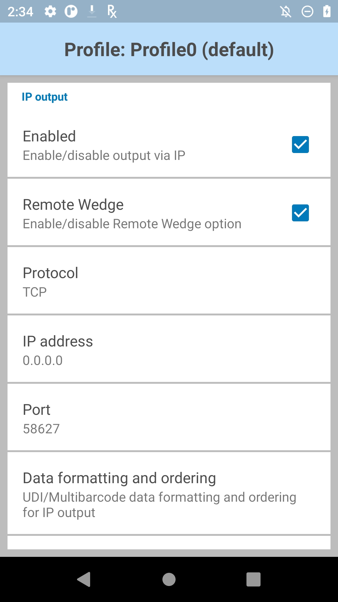
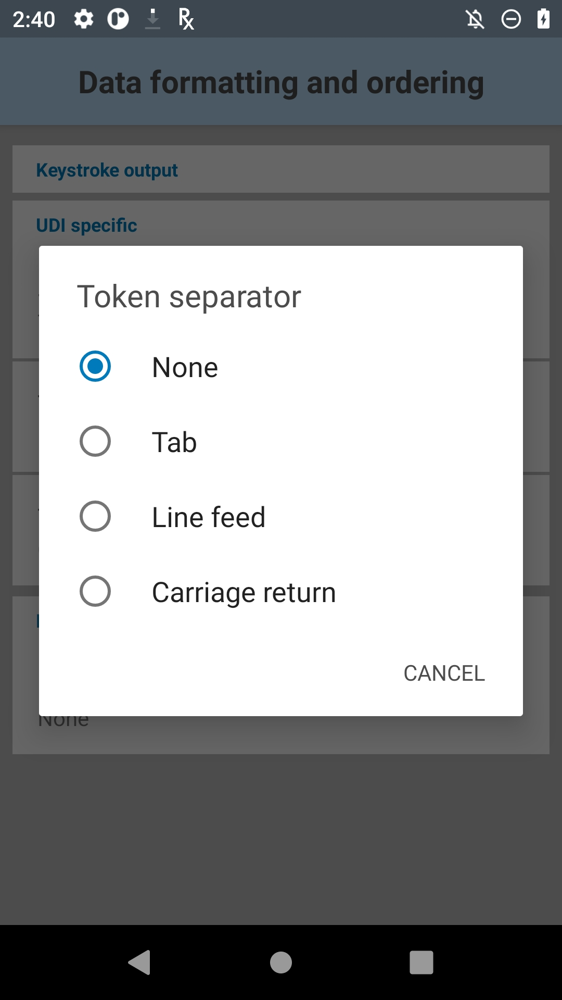
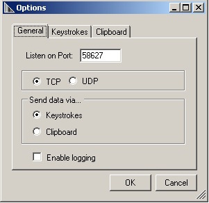

概要
IP 出力を使用すると、キャプチャしたデータを、TCP または UDP トランスポートプロトコルを使用して、指定した IP アドレスおよびポートに送信できます。受信側のマシンで Windows と Zebra IPWedge ソフトウェアが実行されていることが推奨されますが、必須ではありません。
IPWedge は、ネットワーク ポートを監視し、DataWedge IP 出力オプションを使用してデバイスから送信されたスキャン データを受信するコンパクトな Windows アプリです。受信側の PC は、基本的にデバイスをワイヤレス スキャナとして使用して、データをキーストロークとしてフォアグラウンド アプリケーションまたは Windows クリップボードに挿入します。
注: エンドポイント サーバーでデータを受信するときに遅延が発生した場合は、この遅延を避けるために DataWedge アプリのバッテリー最適化をオフにしてください。以下の方法のいずれかで行うことができます。
- Android の設定でのバッテリー最適化
- StageNow または MX App Manager
前提条件
IPWedge を使用するための要件は、以下のとおりです。
- Windows と .NET Framework 3.5 を搭載した PC (SP 1 以降)
- Android 4.4 KitKat 以降を実行している Zebra デバイス
- DataWedge for Android 1.5 以降
IP 出力のセットアップ
IP 出力をアクティブにするプロファイルで、以下の手順に従います。
1.プロファイルの [IP 出力] セクションに移動します。
2.[有効] および [リモート Wedge] ボックスをオンにして、IP 出力と IPWedge Windows アプリとの通信を有効にします。
 IP 出力オプション
3.データ転送用のプロトコル (TCP または UDP) を選択します (デフォルト = TCP)。
4.IPWedge を実行しているシステムの IP アドレスを入力します。
5.ポート番号がデフォルトの 58627 以外になっている場合は、ポート番号を入力します。
UDI データ出力
この設定は、バーコード リーダー パラメータの [スキャン モード] が [UDI] に設定されている場合に該当し、参照先のセクションで選択した 機器固有識別子パラメータで指定された複数のデータ ポイント (トークン) を取得します。
UDI バーコードのサポートは、BSP 10.12.13「Update 17」以降を搭載した Android 10 を実行している Zebra デバイスで復活しました。

トークン選択 - 必要に応じて、取得した UDI データの出力順序を調整し、場合によっては、トークン間にタブ、ライン フィード、またはキャリッジ リターン文字を挿入できます。
UDI トークンの設定を調整するには:
1.[トークンの送信] をタップして、取得した UDI データの目的の出力を選択します。
トークンのみ - UDI データが個別のトークンに分割されて出力されます (選択した場合は、セパレータ文字で区切られます)。
バーコード/トークン - トークン化されたデータを追加したバーコード文字列が送信されます。セパレータ文字が選択されていない場合 (手順 2 を参照) は、同じデータの 2 つのインスタンスが送信されます。
2.必要に応じて、[トークン選択] 画面の [トークン セパレータ] をタップして、トークン間に挿入するセパレータ文字を指定します。[バーコードとトークン] モードを選択すると、選択した文字が両者の間にも挿入されます。 この設定は、[トークンの送信] が無効になっている場合は使用できません。
3.[トークン順序] をタップして、出力にトークンを含めるか、出力からトークンを除外して、出力順序を調整します。 トークンをドラッグして出力順序を調整。
トークンをドラッグして出力順序を調整。
プログラムによる UDI データ出力の構成および構成の取得については、以下を参照してください。
マルチバーコード データ出力
この設定は、バーコード リーダー パラメータの [スキャン モード] が[マルチバーコード] に設定されている場合に該当し、対応するリーダー パラメータに指定されている数のバーコード (2 ～ 10) を同時に取得します。
注: 特定のデバイスでのみサポートされています。詳細については、「DataWedge について」ページを参照してください。
マルチバーコード出力を構成するには:
1.[データ形式と順序] をタップして、各バーコードのデータ間に挿入するセパレータ文字を指定します。
2.[バーコード セパレータ] をタップして、目的の挿入文字 (CR、LF、または TAB) を指定します。
これにより、各バーコードの間にセパレータが追加され、最後のバーコードの後にセパレータが追加されます。最後のバーコードの後の余分なセパレータを削除するには、[高度なデータ形式] ルールの [文字列の削除] アクションを使用します。
各バーコードのデータが連結されて、1 つのキーストローク文字列として配信されます。
IPWedge なしでの IP 出力プラグインの使用
IP 出力を使用して、キャプチャしたデータを IPWedge を実行していないリモート デバイスに送信するには、デバイスの指定したポート (上記を参照) で、TCP または UDP 経由で送信されてくるデータを監視するクライアント アプリが受信側のシステムで実行されている必要があります。警告: Zebra では、このような使用方法はサポートしていません。
キャプチャしたデータをリモート コンピュータまたはデバイスに送信するための IP 出力の構成:
1.プロファイルの [IP 出力] セクションに移動します。
2.[有効] ボックスをオンにして、[リモート Wedge] ボックスをオフにします。
3.データ転送用のプロトコル (TCP または UDP) を選択します (デフォルト = TCP)。
4.データを受信するサーバーまたはデバイスの IP アドレスを入力します。
5.ポート番号を入力します (デフォルトの 58627 以外の場合)。
警告: Zebra では、このような使用方法はサポートしていません。
IPWedge のセットアップ
1.Zebra サポートポータルの IP Wedge for Windows ダウンロード ページにアクセスし、EULA に同意してダウンロードします。
注: Windows Mobile/CE デバイスには、異なるバージョンの IPWedge が必要な場合があります。詳細については、Windows Mobile/CE のダウンロード ページを参照してください。
2.スキャンしたデータの送信先のシステムに .zip ファイルをインストールします。
3.IPWedge アプリを実行します。次の図のような画面が表示されます。IP アドレスとポート番号 (赤のボックス内) を書き留めます。 システムの IP アドレスと監視対象ポートが表示された状態の IPWedge システム トレイ メニュー
システムの IP アドレスと監視対象ポートが表示された状態の IPWedge システム トレイ メニュー
注: ポート番号は、デバイスの [IP 出力] で指定したものと同じである必要があります。
4.Windows の [スタート] メニューから IPWedge アプリを開くか、システム トレイの IPWedge アイコンをクリックして、メニューから [オプション] を選択します。
下図のような IPWedge の [オプション] パネルが表示されます。 [全般] オプション
 [キーストローク] オプション
[キーストローク] オプション
 [クリップボード] オプション
[クリップボード] オプション
5.[オプション] の [全般] タブ、[キーストローク] タブ、および [クリップボード] タブに必要な変更を加えます。各タブで [OK] をクリックして設定を保存します
これで PC は、DataWedge IP 出力 (IP アドレスとポートの設定が PC の設定と一致) からデータを受信できます。
構成
プログラムによる IP 出力の構成および構成の取得については、以下を参照してください。
その他の DataWedge 出力オプション:
関連ガイド: